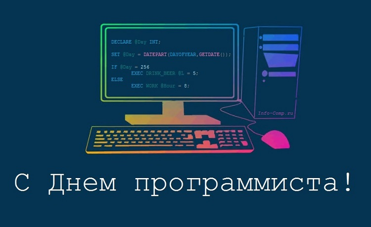

О дне программиста сказано, что этот день следует праздновать на 256 день года. Число было выбрано не случайно: это количество чисел, которое можно выразить с помощью восьмиразрядного байта, а также это максимальная целая степень числа «2», которая меньше, чем количество дней в году. Отмечать 256-й день как День программистов предложил сотрудник веб-студии «Параллельные Технологии» Валентин Балт.

День программиста –
праздник современный,
Когда в почете важный труд,
Расчетов и программ примеры...
Владыки цифр, Вам салют.
Решая сложные задачи,
Не ищите простых путей
Везенья, силы и удачи,
И вдохновляющих идей!
Пусть ваше верное призванье
Вам принесет доход большой,
Решайте новое заданье,
Со всей отчаяной душой!